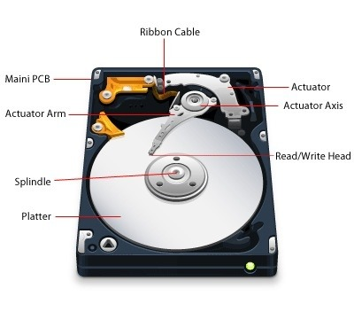
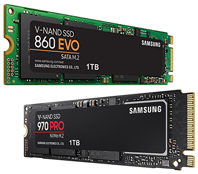
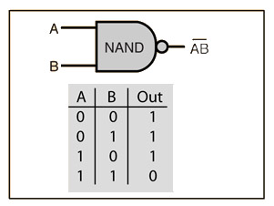

Both an HDD and SSD are storage devices however they differ greatly in the way they store their data. Deciding which is best for you depends on the uses of your computer. Browse the information provdied below to learn more about the devices and to find out similarities and differences. Additionally, take our quiz to test your knowledge about HDDs and SSDs!
CHECK YOUR LEARNING
Hard Disk Drives are the older model for storage, having been used for over 50 years. Time has allowed for storage capacity to increase and physical size to decrease. HDDs depend on the use of spinning disks, or platters, to read and write data.
Hard Disk Drives have one or more magnetically sensitive platters with an Actuator arm that allows the Read/Write head to analyse the data on the platter. A motor powers the arm and platter to move allowing the data to be processed.
Speeds at which the platter spin are pre-set, generally consumer computers range from 4200 rpm to 7200 rpm. These speeds correlate to read/write rates, and the high the pre-set speed, the faster the hard drive will be able to process data.
I/O Controllers are microchips used to allow communication to happen between the HDD and the computer. Specifically, they tell the actuator arm where the data is located so that the read/write head can gather the data. The read/write head then transforms the platters magnetic field into electrical current to read the disk, or alternatively, the read/write head can transform electrical current into magnetic field to write the disk.
Universally, the time it takes for the platter to spin and the actuator arm to find the correct data is known as latency.
Solid State Drives are the new technology in terms of memory storage. SSDs use flash memory to deliver top of the line performance and durability, they can do that because there are no little moving pieces that have the chance to break – which is the case for HDDs.
Solid State Drives can be compared to large USB drives as they use similar technology. SSDs use flash storage, specifically NAND storage. A NAND gate, also known as NOT-AND, is a logic gate which produces an output which is false only if all its inputs are true.
In simplest terms, floating gate transistors record a charge (or lack of a charge) to store data. The gates are organized in a grid pattern, which is further organized into a block. Block size can vary, but each row that makes up the grid is called a page.
SSDs have a complex way of updating data. Blocks, as mentioned before, must be refreshed anytime a portion of it is updated. The process of updating data involves the old block being copied to a new block, the original block is erased, and the data is rewritten with the changes in a new block.
When the SSD is not in use, the garbage collection process begins. It goes through and makes sure that the information on the old block is erased so that it can be written to again. To prevent wear on the drive, there is a built-in algorithm that ensures each block gets and equal amount of read/write processes. This is called Wear Leveling.
| Cost | Speed | Durability | Highest Capacity | Energy Efficiency | |
|---|---|---|---|---|---|
| HDD | Cheaper | Slower | Less Durable | 15 TB | Uses More Energy |
| SSD | More Expensive | Faster | More Durable | 4 TB | Uses Less Energy |
Informaiton from Curcial
| Benefits | Drawbacks | |
|---|---|---|
| HDD | - Less expensive - Proven quality - Available with more storage space than SSDs |
- Easily damaged from movement - Heavier - Uses more energy - Much larger than SSDs |
| SSD | - Faster load times - Lighter - Able to withstand abuse - Uses less energy than HDD |
- Still relatively expensive - Hard to find large-capacity compared to HDDs |
Think you know the differnces between Hard Disk Drives and Solid State Drives? Take this quiz to test your knowledge!